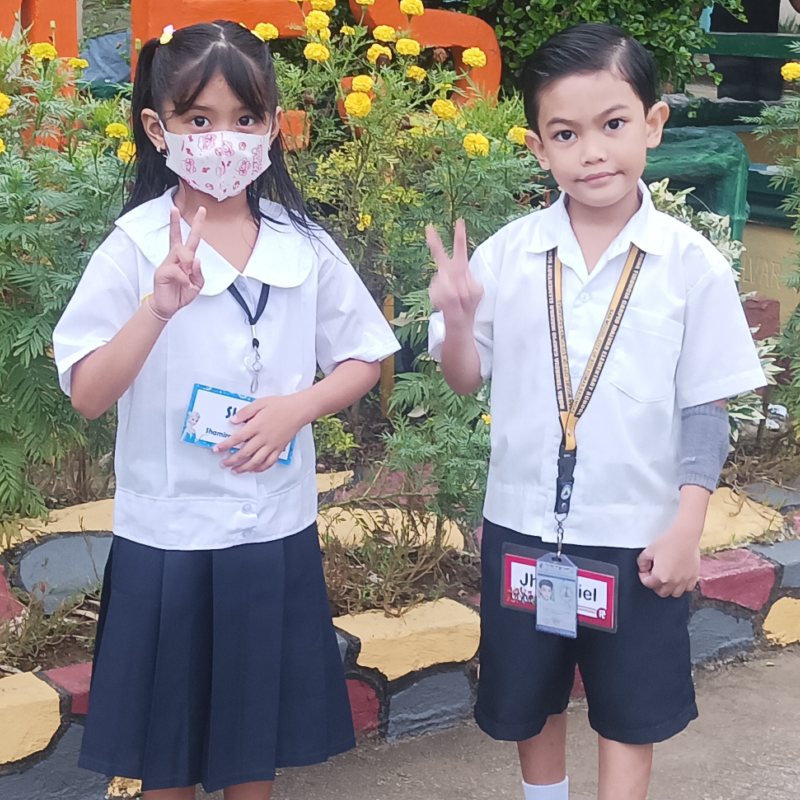

My Pamangkins
Nieces and nephews are an important part of every family and help bring fun to gatherings and other occasions. You should always cherish having a niece or nephew. Many people have great and long-lasting relationships with their nephews and nieces, and we should appreciate them by giving them presents or showing them affection
